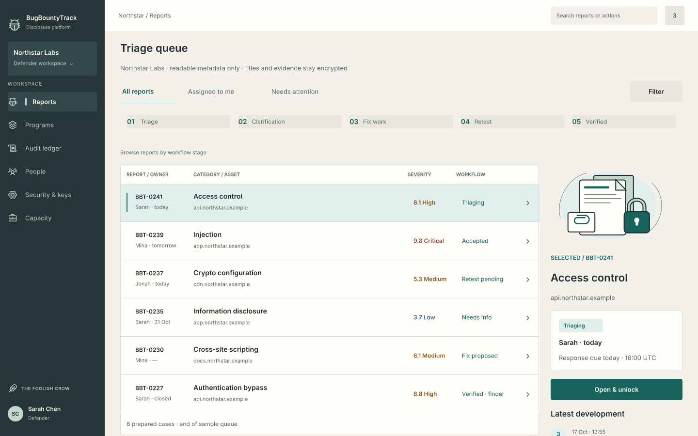
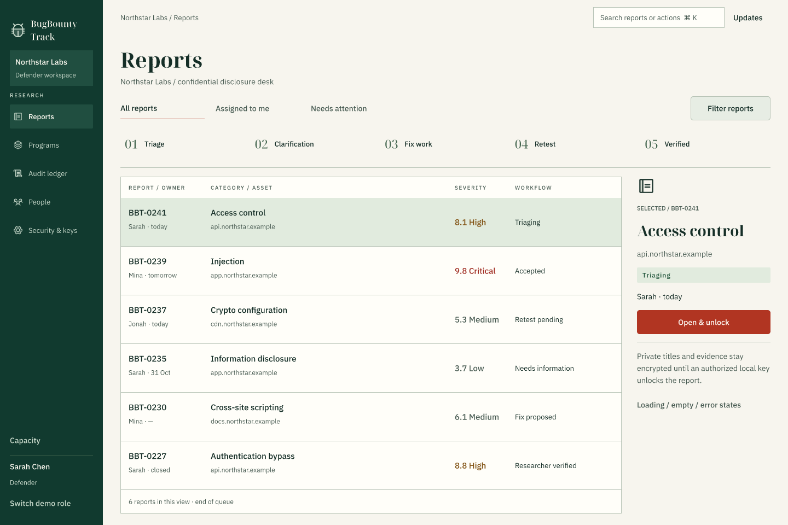
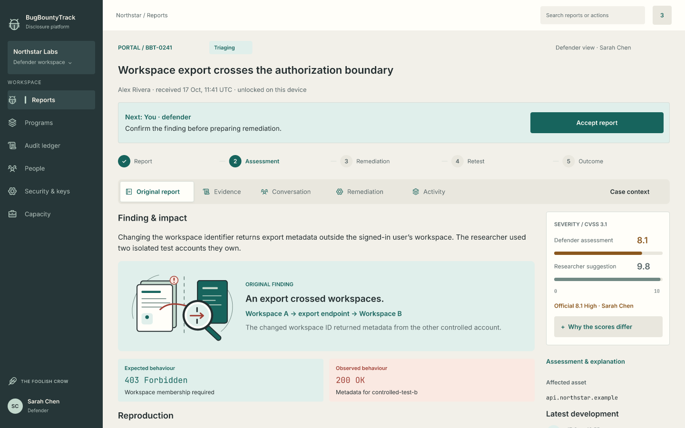
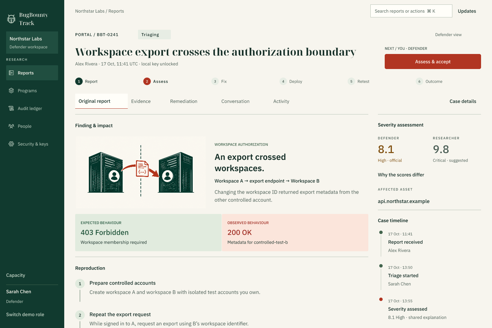
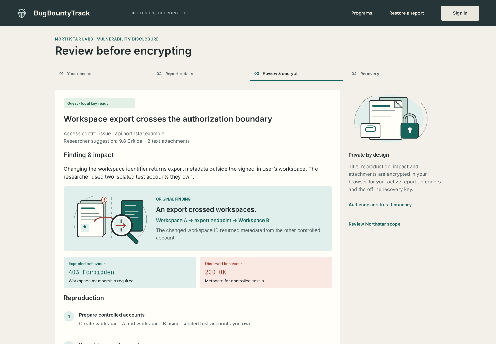
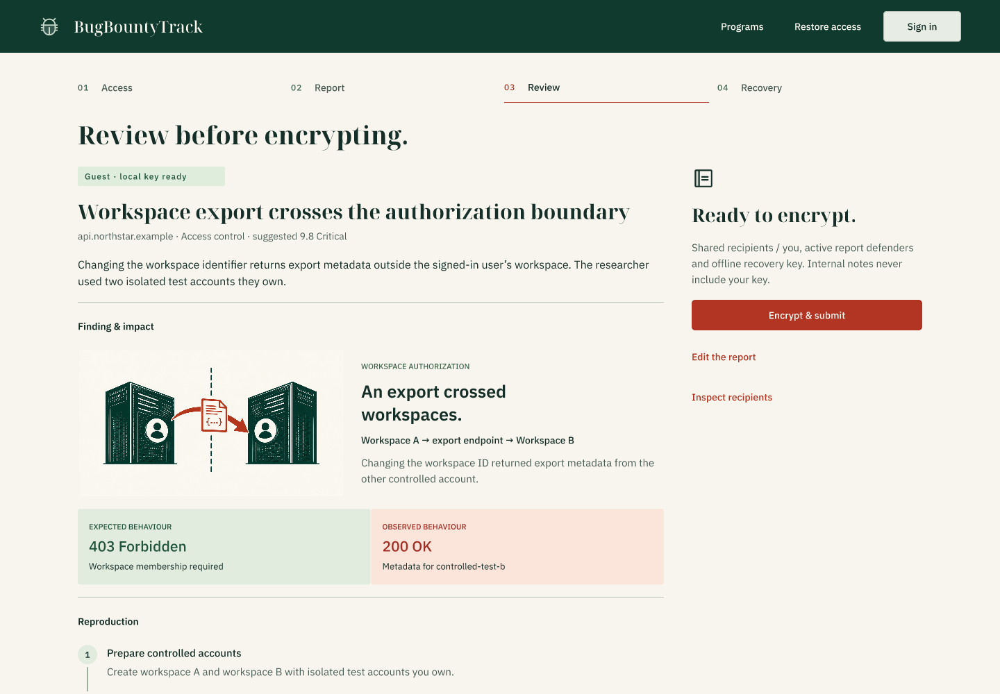
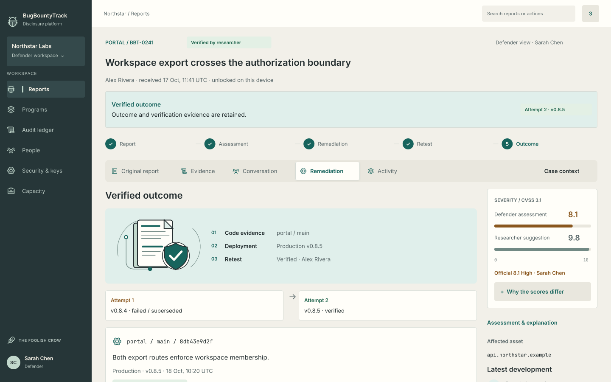
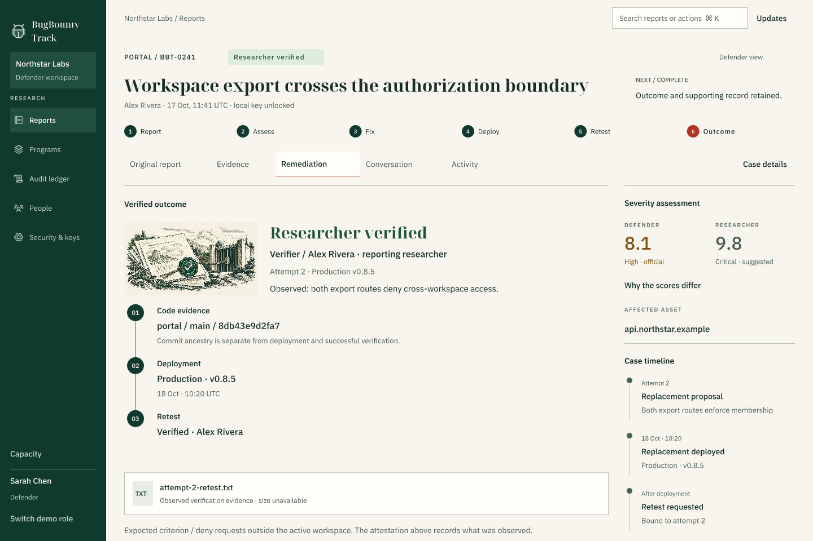

Image 1's forest-and-cream direction, with stronger colour, fewer decorative panels and clearer research structure. These are native screen exports. Scroll within FigCraft to read the complete reports.







